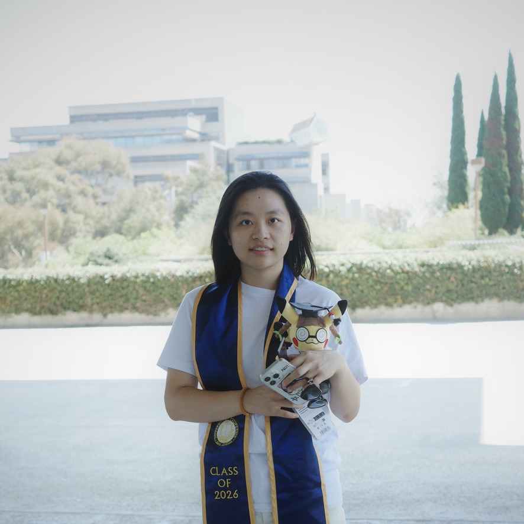

About me
Zenghong He
I’m an Electrical Engineering student at UC San Diego specializing in machine learning and control. My research interests include robotic active matter, collective intelligence, nonlinear dynamics, and emergent behavior in multi-agent systems.
UC San DiegoB.S. Electrical EngineeringClass of 2026
CVView my CV↗
local rules → collective states
robotic active matter · collective intelligence · nonlinear dynamics · learning-based control · robotic active matter ·
Selected work
Three ways into
collective behavior.
Choose a research thread. The field changes with you—and each space holds its own experimental video.
Experiment footage16:9 · 5× speed
Preprint Open paper in a new tab
Phase Transition
Three phases of odd robotic active matter Open paper in a new tab
Experimental robotic collectives reveal three distinct phases of motion. I build custom MASBots, conduct controlled trials, extract trajectories, and analyze how local nonreciprocal interactions produce emergent states.
- Active matter
- MASBots
- Trajectory analysis
Research affiliations
Current research interests
Robotic active matter · Collective intelligence · Nonlinear dynamics · Emergent behavior · Decentralized control